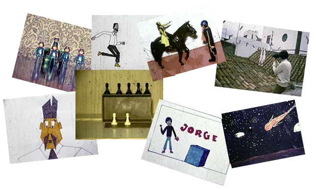
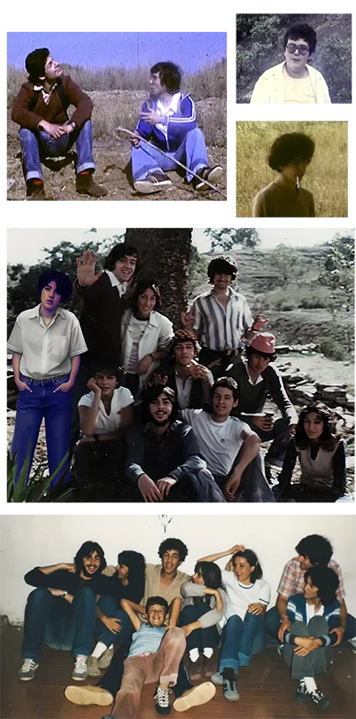
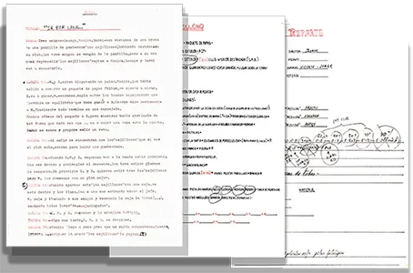

CÓMO TRABAJABA NEW WAVE FILMS
El primer tomavistas de Super 8 mm que tuve en posesión llegó como regalo de Reyes, obsequio de mi hermana Mari Carmen cuando yo tenía 14 años. Se trataba de un auténtico lujo, ya que los precios de las cámaras, proyectores, pantallas, moviolas y empalmadoras eran muy elevados para unos adolescentes. Con el tiempo, y visto en perspectiva, resulta inevitable valorar aquel gesto, algo que probablemente también hicieron mis compañeros con sus propias familias.
Desde aquellos primeros intentos, basados en improvisaciones y pequeñas animaciones con muñecos, piezas de Lego, dibujos, mosaicos o incluso piezas de ajedrez, hasta el primer guion —“Una bestia sin bello o una botella con mal genio”— apenas pasaron uno o dos años. Sin embargo, la pasión y el instinto creativo se impusieron rápidamente. Yo escribía los guiones, planificaba los storyboards mediante dibujos, realizaba animaciones fotograma a fotograma, diseñaba los carteles y dirigía los rodajes.

Encontrar a otros jóvenes con inquietudes similares no era habitual. En aquella época, la mayoría de los intereses giraban en torno al fútbol, los rallys o las discotecas. Aun así, algunos acabamos coincidiendo y, casi sin darnos cuenta, nació NEW WAVE FILMS (NWF).
Formamos una pequeña cooperativa informal, comprando la película entre todos, ya que aquel era el principal gasto. Íbamos andando a los lugares de rodaje y prácticamente nunca comprábamos atrezzo: lo fabricábamos nosotros mismos. Así ocurrió, por ejemplo, con la falsa cámara de cartulina negra construida para “¡Así se rueda una película!” o con el pastel utilizado en “Ir por lana…”, donde, al no disponer de nata, las chicas improvisaron utilizando espuma de afeitar y uvas.

Con una cámara Sankyo “muda” y un trípode básico rodamos el primer cortometraje prácticamente de una sola vez, en una mañana y sin repetir ninguna escena, algo que acabaría convirtiéndose en habitual debido al elevado coste del material y al escaso metraje disponible. Supuestamente cada plano debía planificarse cuidadosamente, porque cada segundo filmado tenía un valor inmediato y casi sagrado para nosotros. Lo teníamos grabado a fuego. Sin embargo, la realidad era que, pese a existir guion, había una enorme dosis de improvisación y también la convicción de que, aunque una escena saliera mal, esa era la válida porque sencillamente no podía repetirse.
Todos los cortometrajes mantuvieron más o menos la misma dinámica. Yo escribía los guiones, buscaba presupuesto, convencía a la gente y, en ocasiones, incluso tenía que persuadir a padres y madres para que dejaran acudir a sus hijos a los rodajes. Acordábamos fechas en las que casi siempre alguien fallaba, olvidaba alguna prenda necesaria o aparecía cualquier imprevisto de última hora. Otras veces surgían oportunidades inesperadas, como la casa vacía que tenía la familia de Pili y que nos dejaron utilizar para rodar “Ir por lana…”, o la vieja vivienda abandonada encontrada en el Lomo Riquiánez, escenario improvisado para los dos últimos cortometrajes.

Incluso una profesora llegó a prestarnos algo de dinero para comprar película y convenció a varias alumnas del instituto —a las que ni siquiera conocíamos previamente— para participar como actrices.
Algunos compañeros se fueron y otros llegaron, pero siempre quedaron los que realmente querían estar. José Bernardo, por ejemplo, aceptó colgarse literalmente de un árbol, dejarse pintar de verde o incluso quemarse parcialmente una oreja para una escena, todo ello sin demasiadas protestas. Y a mí me dejaban dirigir sin cuestionar demasiado si las escenas estaban bien planteadas o no. Supongo que confiaban en que alguien tan testarudo y pesado no podía estar completamente equivocado… aunque a veces sí lo estaba, como se comprobó en uno de los rodajes donde pensé que estaba abriendo el obturador de la cámara para captar más luz y conseguí exactamente el efecto contrario.
Fue una época curiosa, llena de ilusión, imaginación e inseguridades, como probablemente ocurre en casi todas las adolescencias, pero también irrepetible. Durante aquellos años aprendimos, sin apenas darnos cuenta, a trabajar en grupo, improvisar soluciones constantemente y transformar la falta de medios en creatividad.